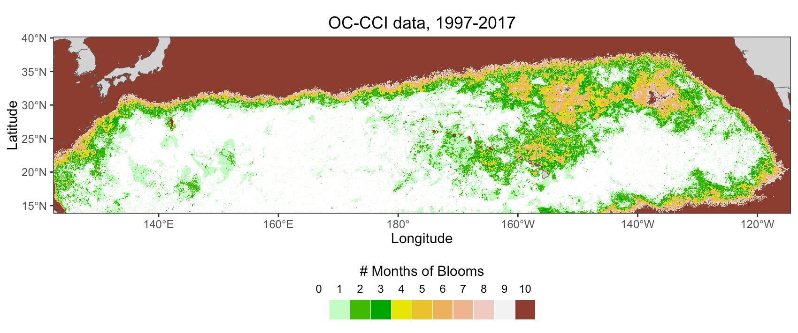

North Pacific Chlorophyll Blooms
Recent conditions
Jul2026
%5D%5B(0.0)%5D%5B(35):(20)%5D%5B(-160):(-130)%5D&.draw=surface&.vars=longitude%7Clatitude%7Cchlor_a&.colorBar=%7C%7CLinear%7C0%7C0.2%7C&.bgColor=0xffccccff&.trim=0&.legend=Off)
Monthly composites of chlorophyll in the bloom region from the 2026 bloom season: ERDDAP™ download
2026-07-03
%5D%5B(0.0)%5D%5B(35):(20)%5D%5B(-160):(-130)%5D&.draw=surface&.vars=longitude%7Clatitude%7Cchlor_a&.colorBar=%7C%7CLinear%7C0%7C0.2%7C&.bgColor=0xffccccff&.trim=0&.legend=Off)
NOAA VIIRS Near Real-Time Weekly Chlorophyll: ERDDAP™ download
Bloom Location and Timing
The blooms develop in a very specific locality. The most intense and the most frequent blooms occur between 130°-150°W and 28°-32° N, but blooms also develop due north of Hawaii. The time integrated location of the blooms can be seen in the figure which shows the number of times when chl values > 0.1 mg/m3 occurred in the Pacific during July-Oct from 1997-2017.
Phytoplankton blooms in the ocean usually occur in spring or fall when there is temporal overlap between nutrient injection into the surface mixed layer from mixing, sufficient light levels for photosynthesis, and decreased grazing to allow net biomass accumulation. The chlorophyll blooms that occur in the open NE Pacific are unusual in that they develop in late summer, July-Oct during the seasonal stratification maximum. The NE Pacific in unique in having late summer blooms consistently occur almost every year in the same general area (Wilson and Qiu (2008)).

{kind=link}
Bloom Forcing
The blooms along 30°N are often made up of diatom-diazotroph assemblages (DDAs) (Villareal et al. (2011); Villareal et al. (2012));. Hemiaulus and Rhizosolenia diatoms occur in this region containing the diazotrophic endosymbiont Richelia. Richelia release fixed nitrogen as ammonium or dissolved organic nitrogen, which is then available to the host diatom. Nitrogen-fixing diatom symbioses (diatom-diazotroph associations: DDAs) often increase 102–103 fold in these blooms and contribute to elevated export flux. Diazotophy mitigates nitrate-base nutrient limitation but phytoplankton growth will still be controlled by the amount of phosphate and or silicate. This part of the ocean does not appear to be iron limited.
Episodic injections of subsurface nutrients are likely the cause of these blooms but the exact mechanism is unknown. Suggested mechanisms include dynamics associated with the convergent zone (Wilson et al. (2008)), the subtropical front (STF) (Wilson (2003); Wilson et al. (2008)), the breaking of internal waves at the critical latitude (Wilson (2011)), eddy interactions (Calil and Richards (2010); Fong (2008); Guidi et al. (2012)) dust deposition (Calil et al. (2011)) and winter mixing of phosphate into the mixed layer (Dore et al. (2008)). Most of the proposed mechanisms of nutrient injection are impossible to investigate without in-situ data, which is difficult to obtain in this relatively isolated part of the ocean. We have been involved in a few missions to collect in situ data, see Mission section.